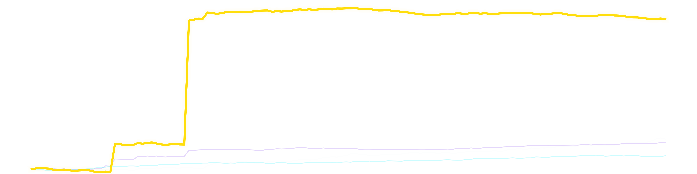

SYSTEM: UNSTABLE
PYRITE
V1 Legacy Architecture // Raw Output
--
Net Alpha Generated
/// Performance Trajectory
LIVE FEED
Quartz
Obsidian
Diamond
Pyrite v1
INSTITUTIONAL ALPHA // ECOSYSTEM BENCHMARK: V1 PYRITE

TRACE_ID: COMPARATIVE-ALPHA-V1
/// Deep Dive
ROI BY SPORT

CONFIDENCE CALIBRATION